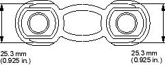
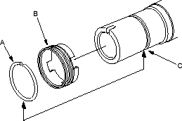
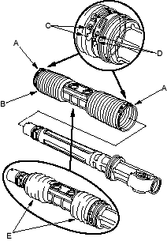
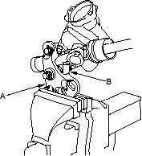

- Check the slider guide for damage and cracks. Using vernier callipers to measure the thickness of the slider guide. If the thickness is less than service limit, replace the slider guide.

- Remove and discard the stop ring (A) on the cylinder by expanding it using a snap ring pliers. Remove and discard the lock screw (B).

- Install the new lock screw on the rack housing.
- Install the new stop ring in the groove (C) on the cylinder by expanding it using a snap ring pliers. Be careful not scratched damage on the housing surface with the stop ring edges.
- Set the new boot bands (A) on the band installation grooves of the boot (B) by aligning the tabs (C) with the holes (D) of the band. Do not close the ear of the boot band in this step.

- Compress the boot by hand, and apply vinyl tape (E) to the bellows so the boots stay collapsed and pulled back.
Pass the boot over the rack housing so the smaller diameter end of the boot faces the gearbox housing. - Attach the yoke (A) of a universal puller to the gearbox housing mounts (B) with bolts, then securely clamp the yoke in a vice with jaws. Do not clamp the gearbox housing in a vice.
